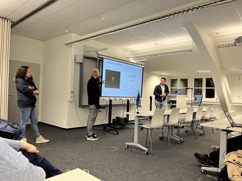

ISIC 2024: Finale und Thanksgiving Event

After an exciting four weeks of puzzles, the ninth edition of the ISIC came to a worthy conclusion at the traditional Thanksgiving event of the IEEE Student Branch Karlsruhe. The teams competed for points for submitted solutions until the very last hours. This year, the teams successfully received messages from a parallel universe.
The order of the teams was as follows: 1st place went to DavidsJünger with 1352 points, neck and neck with the Transformed Fourien with 1258 points. Third place went to Team Chilikaese with 514 points, just ahead of SpaceRift in 4th place with 417 points. Fifth place went to Team Toaster with 103 points. Congratulations again to all the teams.

This year, Dr.-Ing. Noha El Gemayel gave a presentation supported by her colleagues at Swift Navigation titled "From Carrier Phase Tracking to Robust cm-level Accuracy Positioning for Automotive”. After a (much needed) introduction to GNSS, we had a fruitful discussion on localization accuracy using different technologies.
After the detailed technical presentation, the ISIC award ceremony took place. The first team received a LimeSDR mini 2.0, and second andd third place got an RTL-SDR kit. This was kindly sponsored by the company PROCITEC. The prizes and gifts from Mathworks went to all participating teams. In addition, each team received certificates and a voucher for a debriefing in the restaurant “Schwarzer Kater” in Karlsruhe.
Once again, we would like to thank our sponsors PROCITEC and Mathworks for the prizes. We would also like to thank the Communications Engineering Lab (CEL) for the facilities and the IEEE Germany Section for the financial and organizational support.


{kind=link}
{kind=link}
{kind=link}
{kind=link}
{kind=link}
{kind=link}